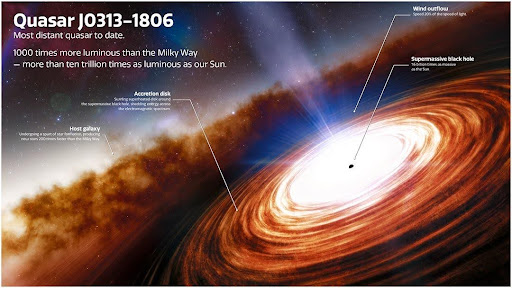

QUASARS
- May 29, 2024
- Admin
- 3 Comments
What are QUASARS ? - A brief introduction.
Quasars are extremely powerful and beautiful objects that emit immense energy and light, illuminating the farthest corners of the universe. They are located beyond the reaches of our planet and are
truly breathtaking to behold. Markus Zusak once said, "And they would all smile at the beauty of destruction," this quote perfectly captures the awe-inspiring magnificence of quasars. If you're
looking to be dazzled by the wonders of the universe, look no further than these majestic celestial objects.
It has been decades since humanity began exploring these enigmatic boxes, yet
only a meager amount of information has been gathered. Quasars are among the most distant and luminous objects in the universe, and their study provides important insights into the early
history and evolution of galaxies.
ORIGIN
Quasar is derived from the phrase "quasi-stellar radio source." The term "quasi-stellar" refers to the fact that quasars appear as point-like sources in the sky, similar to stars, despite
being extremely distant from Earth. The term "radio source" refers to quasars being powerful radio emitters. These astronomical bodies are characterized by luminous cores found in active
galaxies and represent an extreme form of active galactic nuclei (AGN). Such objects are believed to be powered by the accretion of matter onto a supermassive black hole located at the
center of the host galaxy.
An accretion disk is a disk of material that orbits around a massive object, such as a star or a black hole. The material in the accretion disk is usually
made up of gas and dust, and it orbits in a circular pattern due to the gravitational pull of the massive object. As the material in the disk moves closer to the object, it begins to heat
up and radiate energy, which can be detected by telescopes on Earth or in space. Accretion disks play a key role in the formation and evolution of stars and planets, and they are also believed
to be the source of some powerful cosmic phenomena, such as quasars and gamma-ray bursts.
ABOUT
Quasars are incredibly luminous and distant celestial objects that are powered by through accretion, a process in which the matter is heated to extreme temperatures and emits copious amounts
of radiation. This radiation can be observed across the electromagnetic spectrum, from radio waves to X-rays, and is thought to be responsible for some of the most spectacular and energetic
phenomena in the universe, such as powerful jets of matter and energy that can extend for thousands of light-years. Despite their incredible brightness, quasars are also incredibly elusive
and difficult to study, requiring the most advanced telescopes and techniques to reveal their secrets. Massive clouds comprised of matter cascade into the disk encompassing the black hole,
with the innermost areas of said clouds rotating at a higher velocity than their outer counterparts. This speed discrepancy engenders a force of shear that contorts the clouds, leading
them to impact their neighboring masses. The motion of these clouds, as well as the resultant friction, produces a substantial quantity of heat energy. Consequently, the temperature of
the spiraling accretion disk ascends to millions of degrees, and the disk radiates a brilliant light.

A portion of the material is siphoned away from the black hole, giving rise to a magnetically collimated jet that spans
millions of light years and is characterized by a high degree of luminosity. The jet is supported by the hot accretion disk, which, together with the jet, constitutes the nucleus of the active galaxy.
FORMATION
Enormous and dazzling celestial bodies are brought into existence as they are formed by a vast quantity of gas that is pulled toward the central supermassive black hole of a galaxy. This magnificent event typically occurs after two galaxies collide, generating a commotion that sets the gas clouds within the affected region in motion. As the motion of the gas clouds shifts, it triggers the black hole's powerful gravitational pull, which attracts more material, resulting in the creation of colossal celestial bodies.
SOME PROMINENT QUASARS
Some of the most well-known quasars include:
1. 3C 273 - This quasar is the first quasar to be discovered by astronomers in 1963. It is also one of the brightest quasars in the sky and is considered to be
one of the most luminous objects in the universe.
2. Markarian 231 - This quasar is a hyperluminous infrared galaxy that was discovered in the 1990s. It is known for being one of the most powerful galaxies in the universe.
3. 3C 48 - This quasar is one of the closest quasars to Earth and was discovered in 1960. It is also known for being the first quasar to have its redshift measured.
4. 3C 345 - This quasar is a powerful double radio source that has been studied for over sixty years. It is one of the most well-studied quasars in the universe.
5. Ton 618 - It is located in the constellation Auriga and is one of the most studied quasars in the sky. It is estimated to be over 66 billion light-years away from Earth.
6. J0313-1806 - It is a quasar located in the constellation Triangulum Australe. It is estimated to be about 9 billion light-years away from Earth and is one of the brightest
quasars discovered in recent years. J0313-1806 has a mass of about 30 billion times the mass of our sun and is powered by a supermassive black hole in its center.

3C 273, a quasar, which is the closest one to Earth, is located in the
Virgo constellation, approximately 2.3 billion light years away from us.
It was first discovered in 1964, and it has since become one of the most extensively studied quasars.
Its distance from Earth is so vast that it takes 2.3 billion years for its light to reach us, meaning that we are seeing it as it appeared billions of years ago.
Despite its
enormous distance, its magnitude is estimated to be 12.9, which means that it is just within the range of visibility through powerful telescopes. Its brightness and proximity to
Earth make it an ideal object for studying the properties of quasars and the distant galaxies that they inhabit. Studying quasars like 3C 273 helps us better understand the nature
of black holes, the evolution of galaxies, and the early universe. Scientists continue to explore and learn more about these fascinating objects, unlocking some of the deepest
secrets of the cosmos.
One of the reasons quasars are so powerful is because of the powerful outflow of ionized gas they produce. This outflow is caused by the intense
radiation and strong magnetic fields near the black hole, which can accelerate particles to high speeds and create powerful winds. These winds can reach speeds of millions of
miles per hour and carry vast amounts of ionized gas out into space.
The outflow of ionized gas from quasars is much stronger than the solar winds that Earth experiences.
Solar winds are streams of charged particles that flow from the Sun and interact with Earth's magnetic field, creating phenomena like the Northern and Southern lights. While
these winds can be intense, they are no match for the powerful outflow of ionized gas produced by quasars.
CONSEQUENCES
When a galaxy experiences an outflow, it undergoes significant changes. The powerful outflow can push molecular gas clouds, which can trigger rapid star formations, generating intense bursts of star formation, also known as starbursts. However, the outflows can also harm the galaxy, blowing away the gas from the interstellar medium. This process can heat the gas to such an extent that it becomes too energetic to collapse, or it can be expelled from the galaxy altogether. In either case, the galaxy is left without the fuel it needs for star formation, causing it to starve. The outflows from quasars are particularly powerful and can halt the evolution of galaxies for hundreds of millions of years. This means that the outflows can significantly impact the way galaxies evolve and form stars, which can have far-reaching consequences for the universe as a whole.